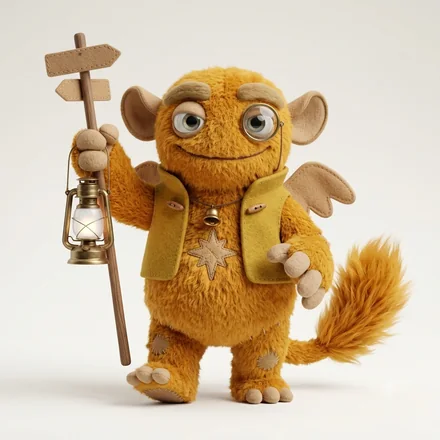

monster type
ENFJ-A-H人を惹きつける伴走モンスター
人の可能性に火を灯し、隣で走る人
モンスター名は、6軸の組み合わせにつけた分類名です。軸ごとの表現ではありません。
一言でいうと人を惹きつける伴走モンスター — A（確信）× H（信頼）
ENFJ-A-Hとは、相手の可能性を先に信じて本人に伝え、人が伸びる場をつくる人です。相手が自分でも気づいていない力を見つけ、そこを本人に信じさせられる。いっぽうで、引き受けた数だけ責任を感じて、抱えきれなくなる。
ENFJ-A-H とは
ENFJ-A-H（ENFJ-AH／ENFJ AH）は、ベースコード ENFJ に、独自軸のA（確信）とH（信頼）が重なるタイプです。64モンスターズでは「人を惹きつける伴走モンスター」と呼んでいます。
相手のなかにある力を見つけ、引き出すことに喜びを感じます。場の空気をつくるのがうまく、自然と中心的な役割を担います。他者のために動きすぎて、自分の状態が後回しになりがちです。
目の前の人の可能性を信じ、迷いなくそこへ火を入れていくタイプ。自分の見立てを疑わず、相手のことも疑わないので、言葉に強い推進力が乗ります。人が自然に集まってきますが、集まった全員の面倒をみようとして、いつのまにか自分の分の時間がなくなります。
コードの読み方は64タイプ性格診断とはに、設問と採点の作り方はこの診断についてにまとめています。
ENFJ-A-H はこんな人
- 新しく入った人の名前と背景を、その日のうちに覚えている人
- 相手が自分でも気づいていない可能性を、先に言葉にする人
- 集まった全員の面倒をみようとして、自分の時間がなくなる人
実在の人物ではなく、役割と場面の類型で書いています。
ENFJ-A-H あるある
- 引き受けた数だけ責任を感じて、抱えきれなくなる
- 人の相談には即答できるのに、自分の予定は空いていない
- 「大丈夫」と聞く側で、聞かれる側になったことがない
- 自分が抜けたら回らないと思って、抜けられない
- 褒めるのが上手すぎて、本気だと思われないことがある
ENFJ-A-H と近いタイプとの違い

ENFJ-A-H の強みと、気をつけたいところ
強み
相手が自分でも気づいていない力を見つけ、そこを本人に信じさせられる。人が伸びる場そのものを作れます。
落とし穴
引き受けた数だけ責任を感じて、抱えきれなくなる。増やす前に手放すものを決める——新しく受けるたびに一つ返すルールが効きます。
ENFJ-A-H がつまずきやすい場面
新しい相談を引き受けた週に、前から約束していた自分の予定を削っている。
引き受けるたびに、手元から一つ手放すものを決める。数が増えないだけで、一人ひとりに向ける質が保てます。
チームの誰かが不調なとき、本人より先に解決策を用意して動いてしまう。
動く前に「手伝ってほしい？」と一度だけ聞く。先回りが、相手の力を信じる形に変わります。
自分が疲れていることを誰にも言えず、「大丈夫」と答え続ける。
自分が聞いてもらう側になれる相手を一人決めておく。いつも聞く側にいる人ほど、先に決めておかないと話す場がありません。
恋愛での ENFJ-A-H
ENFJ-A-Hは、相手のいいところを見つけて、それを本人に返します。関係が始まる前から、この人はもう相手の味方です。
かみ合う相手
受け取ることが下手でない相手。褒め言葉をそのまま受け止められる人となら、この関係はよく続きます。
気をつけたいところ
相手のためにばかり動いて、自分がどうしたいかを言わない。「私はこうしたい」を、月に一度でいいので言葉にしてください。
ENFJ-A-H が力を発揮しやすい仕事・環境
力を発揮しやすい環境
人の成長や関係づくりが成果につながる環境
担いやすい役割
チーム運営、育成、渉外、ファシリテーション
チームづくりの中心に。抱え込みすぎない役割分担が長期戦の鍵。
ENFJ-A-H の人間関係
ENFJ-A-Hは、人の可能性を見つけて、先に信じます。信じ方に迷いがなく、しかも本人に伝えるので、周りに人が集まります。
すでに近い相手とのあいだで
近い相手ほど、こうなってほしい姿を強く描きます。期待として渡されるので、応えられないときに相手が苦しくなります。がっかりさせたくないから言えない、という状態を作ります。
まだ近くない相手とのあいだで
初対面から相手の良いところを見つけて口に出します。受け取る側には嬉しさと重さが同時に届きます。距離の詰め方が速い自覚を持つと、関係が長く続きます。
ENFJ-A-H と相性がいいタイプ
恋人としてかみ合う相手

仕事のパートナーとして組みやすい相手


6軸の重みづけから計算した目安で、実際の関係を判定するものではありません。
よくある質問
ENFJ-A-Hとはどんなタイプですか？
ENFJ-A-Hは「人を惹きつける伴走モンスター」です。相手の可能性を先に信じて本人に伝え、人が伸びる場をつくる人です。目の前の人の可能性を信じ、迷いなくそこへ火を入れていくタイプ。自分の見立てを疑わず、相手のことも疑わないので、言葉に強い推進力が乗ります。人が自然に集まってきますが、集まった全員の面倒をみようとして、いつのまにか自分の分の時間がなくなります。
ENFJ-A-Hがつまずきやすいのはどんな場面ですか？
新しい相談を引き受けた週に、前から約束していた自分の予定を削っている。チームの誰かが不調なとき、本人より先に解決策を用意して動いてしまう。自分が疲れていることを誰にも言えず、「大丈夫」と答え続ける。
ENFJ-A-HとENFJ-O-Hの違いは何ですか？
どちらも人を信じて開きます。ENFJ-A-H は「あなたならできる」と迷いなく背中を押し、ENFJ-O-H は全員の状態を気にかけて、応え方をその都度考え直します。A-H は推進力、O-H は細やかさが持ち味で、消耗しやすいのは O-H のほうです。
ENFJ-A-Hはどんな仕事で力を発揮しやすいですか？
人の成長や関係づくりが成果につながる環境で力を発揮しやすく、チーム運営、育成、渉外、ファシリテーションといった役割を担いやすいタイプです。ENFJ-A-Hの場合は、チームづくりの中心に。抱え込みすぎない役割分担が長期戦の鍵。
ENFJ-A-Hの恋愛傾向は？
相手のいいところを見つけて、それを本人に返します。関係が始まる前から、この人はもう相手の味方です。かみ合いやすいのは、受け取ることが下手でない相手。褒め言葉をそのまま受け止められる人となら、この関係はよく続きます。
ENFJ-A-Hは「ENFJ-AH」や「ENFJ AH」と同じですか？
同じものです。ENFJ-A-H・ENFJ-AH・ENFJ AH は、いずれも同じ組み合わせを指します。